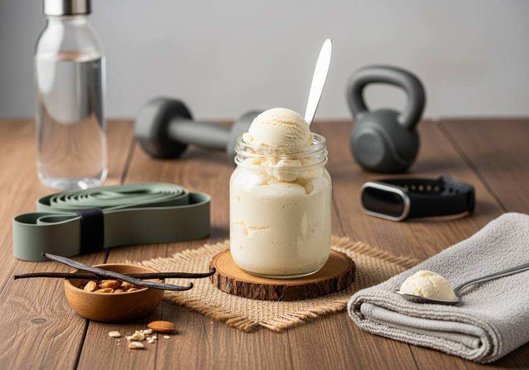

← Alle recepten

🍽 1 pint (2 porties)
⏱ Voorbereiding: 10 min
🔥 Bereiding: 24 uur
Σ Totaal: 24 uur 10 min
Ingrediënten
- 120 g Griekse yoghurt 0%
- 300 ml eiwitrijke melk (bv. Melkunie Protein)
- 25 g naturel wei-eiwitpoeder
- 2 el erythritol of 1 el honing
- 1 tl vanillepasta (of extract)
- Snufje zout
Bereiding
- Mix alle ingrediënten in een blender volledig glad, ongeveer 30 seconden.
- Giet het mengsel in de Creami-pint en vries minimaal 24 uur plat in.
- Draai op de stand Lite Ice Cream.
- Nog kruimelig? Voeg een scheutje melk toe en gebruik Re-spin voor een romig resultaat.
Geïnspireerd door Skinnytaste